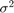

Demo of the GSCA model with a concave penalty
This doc is going to show how to simulate coupled binary and quantitative data sets according to the GSCA model with logit or problit links. After that, a GSCA model is constructed on the simulated data sets. Then the constructed model is evaluated by its ability in recovering the simulated parameters.
Contents
Add current folder to the path
clear all;
current_fold = pwd;
addpath(genpath(current_fold));
The Simulation of coupled binary and quantitative data sets
We use the logit transform of the empirical marginal probabilities of the binary CNA data set as the simulated offset term to simulate imbalanced binary data . The number of samples, binary variables and quantitative variables are , , respectively. The noise level  in simulating quantitative data set is 1. The simulated low rank is 10. The SNRs in generating and are both 1.
% % import real binary CNA data set load('X1_CNA.mat'); mu1_fixed = logit(mean(X1_CNA,1)); % imbalanced binary data simulation %mu1_fixed = zeros(1,size(X1_CNA,2)); % balanced binary data simulation % data simulation SNRs = [1,1]; % SRNs in simulating X1 and X2 K = 10; % simulated low rank link = 'logit'; % use logit link %link = 'probit';% use logit link seed = 1234; % set seed to reproduce the example [X1,X2,Theta_simu,mu_simu,Z_simu,E_simu] = GSCA_data_simulation(mu1_fixed,SNRs,K,link,seed); % plot of the simulated offset term figure plot(mu_simu); title('simulated offset'); xlabel('variables'); % plot of the singular values of true signal and noise figure; plot(svds(Z_simu,K), '-o'); hold on; plot(svds(E_simu,30), '-o'); legend('signal','noise'); title('singular values of signal and noise'); xlabel('component'); ylabel('singular value');
A GSCA model with GDP penalty
First, we need to specify the penalty we want to use, and the values of the corresponding tuning parameters. Here, we use GDP penalty as an example.
% % nuclear norm penalty %fun = 'lp'; gamma = 1; lambda = 50; % lq penalty %fun = 'lp'; gamma = 0.1; lambda = 4000; % SCAD penalty %fun = 'scad'; gamma = 5; lambda = 50; % GDP penalty fun = 'GDP'; gamma = 1; lambda = 500; % parameters for the GSCA model opts.tol_obj = 1e-5; % stopping criteria opts.maxit = 1000; % max number of iterations opts.link = link; % link function opts.gamma = gamma; % tuning parameter opts.lambda = lambda; % tuning parameter % the GSCA model tic; [mu,Z,sigmaSquare,out] = GSCA_softThre_MM(X1,X2,fun,opts); toc; ThetaHat = ones(size(Z,1),1)*mu' + Z; % check the convergence figure plot(out.hist_obj, '-'); title('trajectory of loss function'); xlabel('iterations');
Elapsed time is 10.080069 seconds.
Evaluting the constructed GSCA model
Since the true parameters are available in our simulation, we can evaluate the performance of the GSCA model by comparing the estimated parameters and the true ones.
% % estimated rank out.rank % estimated noise level \sigma^2 sigmaSquare % RV coefficient between simulated Theta and its estimation. RV_modified_bda(Theta_simu, ThetaHat) % RMSE in estimating Theta norm(Theta_simu-ThetaHat,'fro')^2/norm(Theta_simu,'fro')^2 % RMSE in estimating mu norm(mu_simu-mu,'fro')^2/norm(mu_simu,'fro')^2 % RMSE in estimating Z norm(Z_simu-Z,'fro')^2/norm(Z_simu,'fro')^2
ans =
10
sigmaSquare =
0.9187
ans =
0.9996
ans =
0.0690
ans =
0.0295
ans =
0.1663